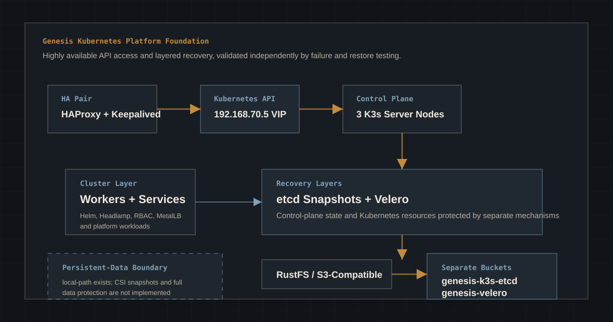

Proxmox hosts the virtual machines, while Terraform defines the infrastructure path and cloud-init handles first-boot operating-system configuration.
Case Study - Kubernetes Platform Engineering
Genesis Kubernetes Platform Foundation
Genesis is an enterprise-style Kubernetes development environment built in a private lab to exercise platform architecture, implementation, operations, and recovery as one connected system.
The current platform combines a highly available K3s control plane with layered disaster recovery: embedded etcd snapshots for control-plane state and Velero for Kubernetes-aware resource restoration, both protected in local S3-compatible RustFS object storage.
Platform Status
Recovery Validated
- InfrastructureProxmox VE
- ProvisioningTerraform + cloud-init
- Operating SystemUbuntu Server 24.04 LTS
- KubernetesK3s
- Control Plane3 K3s server nodes + workers
- API Access192.168.70.5 HA VIP
- Recoveryetcd snapshots + Velero
- Off-node RepositoryS3-compatible RustFS
Project Goal
The goal is a working platform that makes architecture, failure modes, and recovery decisions testable.
Three K3s control-plane nodes and worker nodes provide the cluster foundation, while two dedicated HAProxy and Keepalived VMs expose a resilient Kubernetes API endpoint.
Protection is separated by responsibility: etcd snapshots support control-plane disaster recovery, Velero restores Kubernetes resources, and persistent application data remains a distinct design concern.
Technology Stack
The stack separates infrastructure, API availability, Kubernetes operations, and recovery responsibilities.
Proxmox, Ubuntu, cloud-init, Terraform
VM lifecycle, base OS configuration, and repeatable provisioning are handled before Kubernetes enters the picture.
K3s, Helm, kubectl, k9s, Headlamp
The cluster is operated with standard Kubernetes tooling, Helm-managed applications, RBAC, and administrative interfaces.
HAProxy, Keepalived, 192.168.70.5
Two dedicated load-balancer VMs provide the Kubernetes API VIP; failover of that client endpoint was deliberately validated.
K3s etcd snapshots, Velero, RustFS
Separate S3-compatible buckets protect control-plane state and Kubernetes resource backups without representing RustFS as AWS.
Architecture Overview
Availability and recovery are layered so each mechanism has a clear responsibility.
Responsibility Model
HA keeps the API reachable; etcd snapshots protect control-plane state; Velero protects Kubernetes resources; application data needs its own storage-aware controls.
HA Boundary
The VIP is the validated HA client endpoint, not a claim about every internal join relationship.
Keepalived and HAProxy provide 192.168.70.5 for highly available Kubernetes API access. CP-02 and CP-03 were originally joined through CP-01 at 192.168.70.10:6443. Whether those internal relationships should be changed to use the VIP is a separate architecture review item.

Accomplishments
The platform now includes validated API failover, off-node backup paths, policy execution, and destructive recovery.
Validation
The first services were verified at the Kubernetes object layer, not just installed and assumed working.
Resource metrics available through kubectl
- Checkkubectl top nodes
- Checkkubectl top pods
- ResultCluster resource visibility confirmed.
Helm-managed certificate automation layer
- CheckHelm release verified.
- CheckCRDs verified.
- Resultcert-manager pods running in the cluster.
Operator workflow made persistent
- CheckKUBECONFIG survives new shell sessions.
- CheckHelm and k9s available from the operator shell.
- ResultDay-two cluster access is repeatable.
Layered Recovery Architecture
Kubernetes backup is not one mechanism; each layer protects a different recovery boundary.
K3s embedded-etcd snapshots
Scheduled snapshots protect Kubernetes control-plane state and are written directly to the genesis-k3s-etcd bucket in the local S3-compatible RustFS service. Manual and scheduled snapshot creation were validated across the control-plane environment.
Velero workload and API-resource recovery
Velero 1.18.2 uses the compatible AWS/S3 plugin 1.14.2 as an S3 protocol adapter for RustFS. AWS is not part of this implementation. Backups are isolated in the genesis-velero bucket.
A separate protection problem
K3s local-path storage is present, but the environment does not provide the CSI snapshot capability needed for advanced volume protection. Full persistent application-data protection is not implemented.
Protect and validate K3s recovery material
The K3s server token and configuration material are required for etcd disaster recovery. Independent protection and recovery validation of that material remain explicit security and DR follow-up work.
Destructive Recovery Validation
The recovery path was tested by deleting a workload and restoring it from off-node storage.
velero-test with NGINX
A namespace containing an NGINX deployment was backed up successfully and then deliberately deleted.
Absence confirmed before restore
Kubernetes confirmed that the namespace and its resources no longer existed before restoration began.
Namespace and workload recreated
The namespace, deployment, ReplicaSet, and running NGINX pod were successfully restored.
Kubernetes → Velero → RustFS → recovery
The result demonstrates recoverability, not merely successful product installation or configuration.
Operational Backup Policy
The daily whole-cluster resource policy was executed from its real schedule template and independently verified.
| Control | Policy or Test | Validated Result |
|---|---|---|
| Schedule | genesis-daily | Whole-cluster Kubernetes resource backup, daily, with a 336-hour / 14-day TTL. |
| Template Test | genesis-daily-test created from genesis-daily | Completed with all namespaces included and no namespace exclusions. |
| Object Count | 428 objects expected | 428 objects successfully backed up. |
| Repository Evidence | genesis-velero / backups / genesis-daily-test | Archive, logs, metadata, resource lists, results, volume information, and velero-backup.json verified in RustFS. |
| etcd Automation | Operational schedule | Scheduled S3 snapshot creation validated; a temporary five-minute test interval was removed after observation. |
Compatibility Assessment
Kasten K10 was evaluated with its official prerequisite test and intentionally not deployed.
Kasten K10 9.0.2
The official Helm repository was prepared and the K10 Primer was run before introducing the product.
Version and storage prerequisites were not met
The Primer rejected Kubernetes v1.36.3+k3s1 as unsupported and identified the lack of CSI snapshot capability in the local-path storage design.
Do not deploy K10 in the current environment
The evaluation prevented an incompatible deployment and turned the result into input for the next Kubernetes version and storage architecture review.
Engineering Decision Log
The project works because each tool has a defined boundary.
| Decision | Reason | Outcome |
|---|---|---|
| Keep Ubuntu as clean as possible | The base OS should stay predictable, minimal, and easy to replace. | Reduced configuration drift and made node behavior easier to explain. |
| Automate admin tooling with bootstrap scripts | Operator tools change more often than VM infrastructure or base OS setup. | Helm, k9s, and kubeconfig setup became repeatable without bloating cloud-init. |
| Separate cloud-init responsibilities from bootstrap scripts | cloud-init should handle first-boot OS configuration, not every administrative workflow. | The project gained a clearer boundary between node provisioning and operator setup. |
| Use Terraform for infrastructure only | Terraform is best used here to create VMs and infrastructure state, not install Kubernetes applications. | Infrastructure provisioning stayed separate from Kubernetes service lifecycle management. |
| Use Helm for Kubernetes applications | Kubernetes services need releases, chart values, upgrades, and clean uninstall paths. | Metrics Server and cert-manager became managed platform components. |
| Organize the repo for long-term growth | Platform projects accumulate scripts, docs, cloud-init files, and service definitions quickly. | The repository became a maintainable platform artifact instead of a set of one-off commands. |
| Favor reusable structure over one-off deployment | The next cluster iteration should not require rediscovering the same steps. | The work shifted from learning commands to building a reusable platform foundation. |
Operational Challenges
The build surfaced practical issues at the virtualization, OS, tooling, and Kubernetes layers.
Serial console behavior was not always useful
- IssueSerial console behavior made early node troubleshooting less direct.
- ResolutionUse VGA console when boot and login inspection are needed.
- LessonConsole mode is part of VM template validation.
cloud-init disabled password authentication
- IssuePassword login failed after first boot.
- ResolutionUse SSH key access and document the expected login path.
- LessonA secure default can look like a failure if it is not documented.
Cluster access needed to persist
- IssueManual kubeconfig setup did not survive clean operator sessions.
- ResolutionConfigure persistent KUBECONFIG through the bootstrap workflow.
- LessonDay-two access is part of the platform, not a convenience step.
Service installation needed the right tool
- IssuePlatform services needed repeatable install and release tracking.
- ResolutionInstall Helm and use charts for Kubernetes applications.
- LessonApplication lifecycle belongs in the Kubernetes layer.
Kubernetes hierarchy had to become visible
- Issuecert-manager introduced releases, CRDs, namespaces, deployments, services, and pods.
- ResolutionVerify each object layer instead of treating the install as a black box.
- LessonKubernetes operations depend on knowing which object type you are inspecting.
Lessons Learned
The useful lesson was the separation of responsibilities across the platform toolchain.
Terraform creates infrastructure
It defines and provisions the virtual machines. It should not become the owner of every Kubernetes service.
cloud-init configures operating systems
It is the right place for first-boot OS identity, access, package, and baseline configuration.
Bootstrap scripts configure administrator tooling
They handle the operator workflow: persistent kubeconfig, Helm, k9s, and local control-plane access.
Helm manages Kubernetes applications
Platform services need release state, chart values, repeatable upgrades, and clean rollback paths.
CRDs extend Kubernetes
cert-manager is not only pods. It adds new Kubernetes object types that the platform can use later.
k9s improves operational inspection
It gives a practical interface over kubectl for watching resources, namespaces, pods, and service state.
Repository organization matters early
Platform engineering projects grow quickly. Structure becomes part of the operating model.
Repository Improvements
The repository now supports repeatability, troubleshooting, and future platform evolution.
Project entry point
Gives the project a current-state summary, stack overview, and a clear place to start.
Repeatable build path
Captures the install sequence so the platform can be rebuilt without relying on terminal history.
Operational memory
Documents real issues and resolutions while the details are still fresh.
Administrator setup automation
Automates the tooling and kubeconfig work needed to operate the cluster consistently.
OS provisioning boundary
Keeps first-boot configuration separate from platform scripts and documentation.
Long-term maintainability
Gives runbooks, decisions, helper scripts, and future service work stable places to live.
Foundation Readiness Assessment
Implemented, evaluated, and unresolved capabilities are kept distinct.
| Area | Status | Assessment |
|---|---|---|
| Infrastructure | Ready | Proxmox VM foundation is in place. |
| Terraform | Ready | Infrastructure deployment is repeatable. |
| Cloud-init | Ready | OS provisioning is separated and documented. |
| Helm | Ready | Kubernetes application management is available. |
| Metrics | Ready | Metrics Server is installed and validated. |
| TLS Management | Ready | cert-manager is installed with CRDs and running pods. |
| API High Availability | Validated | Keepalived and HAProxy provide 192.168.70.5; VIP failover was tested. |
| Control-plane Protection | Validated | K3s embedded-etcd snapshots are scheduled to off-node S3-compatible RustFS storage. |
| Resource Recovery | Validated | Velero restored a deliberately deleted namespace and workload. |
| Ingress | Planned | Ingress controller selection and configuration are next. |
| MetalLB | Installed / Evaluating | Worked with as a service exposure option; no broader production role is claimed. |
| GitOps | Planned | Argo CD is planned for declarative application delivery. |
| Observability | Planned | Prometheus, Grafana, and Loki are planned beyond Metrics Server. |
| Persistent Storage | Limited | K3s local-path exists, but CSI snapshots and complete persistent-data protection do not. |
| Kasten K10 | Not Deployed | Version 9.0.2 was evaluated and rejected by prerequisites for Kubernetes version and CSI capability. |
| DR Recovery Material | Follow-up | Independent protection and restore validation for the K3s server token/configuration remain required. |
| Application Platform | Planned | Application hosting patterns come after networking, storage, and GitOps. |
Platform Evolution
The foundation has progressed from repeatable deployment to HA and tested recovery, with storage design next.
-
Phase 1
Platform Foundation
Completed: Proxmox, Terraform, cloud-init, K3s, administrator tooling, Metrics Server, cert-manager, and initial platform services.
-
Phase 2
Control-plane High Availability
Completed: three control-plane nodes plus HAProxy and Keepalived at 192.168.70.5, with VIP failover validated.
-
Phase 3
Layered Recovery
Completed and tested: K3s etcd snapshots, Velero resource backups, off-node RustFS repositories, scheduling, and destructive restore.
-
Phase 4
Storage and DR Hardening
Evaluate CSI-capable storage, define persistent-data protection, and independently protect and validate required K3s recovery material.
-
Phase 5
Platform Services and Workloads
Continue ingress, observability, GitOps, and workload patterns after the recovery and storage boundaries are explicit.
Matt's Notes
This project changed Kubernetes from a command list into a platform model.
What surprised me was how quickly the work became less about Kubernetes commands and more about boundaries. Terraform creates infrastructure. cloud-init configures the operating system. Bootstrap scripts configure the administrator experience. Helm manages Kubernetes applications. Once those lines were clear, the whole platform became easier to reason about.
The biggest lesson was that availability and recoverability are different. A highly available API does not replace control-plane backups, and an etcd snapshot does not replace Kubernetes-aware workload recovery or application-data protection.
I also realized this follows the same automation philosophy I used years ago with Windows batch deployment scripts: remove repeatable manual work, make the next run cleaner, and leave enough notes that someone else can trust the process later.
Repository organization mattered earlier than I expected. At first it feels like ceremony. Then the repo has cloud-init files, bootstrap scripts, install notes, troubleshooting history, docs, and a roadmap. The structure becomes part of the platform.
The destructive Velero test changed the quality of the claim. The platform did not stop at installing a backup tool: a workload was removed, its absence was confirmed, and Kubernetes recreated it from the off-node backup path. The storage limitation and Kasten decision are equally useful because they identify what the current architecture cannot yet protect.
Next Architecture Review
The next pass should close recovery prerequisites and design persistent-data protection.
- K3s token and configuration protection
- CSI-capable storage evaluation
- Persistent-data backup design
- Control-plane join-path review
- Ingress and service exposure
- Observability and GitOps